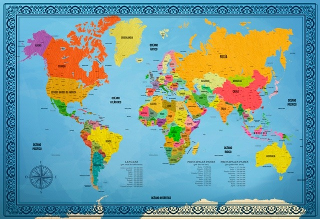

Mapa
Inicio
Un mapamundi (del latín medieval mappa mundi, «mapa del mundo») es una representación cartográfica (mapa) de toda la superficie terrestre. El material sobre el que se representa suele ser de papel y en un principio, era de piel. Dependiendo de su forma, un mapamundi puede ser un globo terráqueo, que reproduce a escala la forma prácticamente esférica del geoide; o un planisferio terrestre, que reproduce a escala el resultado teórico de algún tipo de proyección geográfica de la esfera terrestre en un plano. Existen planisferios celestes para la representación de las estrellas.
Los mapamundis suelen presentarse en forma de distintos tipos de mapa temático dependiendo del detalle permitido por la escala, que cuando es muy alta, se limita a mapas parciales y no a mapamundis.
El propósito más importante de un mapa político es mostrar las fronteras territoriales. El propósito de un mapa físico es mostrar las características físicas o accidentes geográficos (como montañas, ríos, lagos, mares, líneas de costa de islas y continentes, tipos de paisaje específicos -cordilleras, desiertos, selvas, marismas, manglares, glaciares, banquisa, etc.-).
Otros usos suelen restringirse a mapas parciales, aunque pueden reflejarse en un mapamundi si se prescinde de los detalles, y se limita su reflejo un nivel muy general: Los mapas geológicos muestran las características de las rocas, líneas de fallas, y estructuras superficiales. Los mapas topográficos representan las curvas de nivel, identificando distintos accidentes físicos o usos del suelo con símbolos convencionales apropiados (los símbolos cartográficos: por ejemplo, los vértices geodésicos con un triángulo, los cultivos con iconos significativos, las carreteras con líneas rojas de distintas dimensiones, los ferrocarriles con líneas negras, las fronteras con líneas continuas o discontinuas, las ciudades con círculos de tamaño proporcional a su importancia, o con su trazado aproximado -en caso de mapas muy detallados-, llegando al detalle de reflejar casas e instalaciones humanas de todo tipo).
